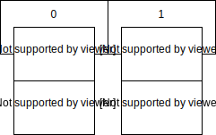
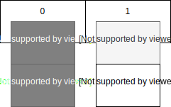
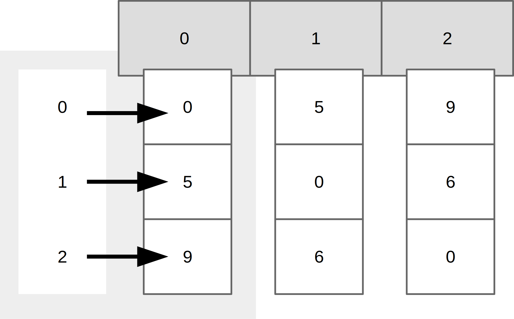
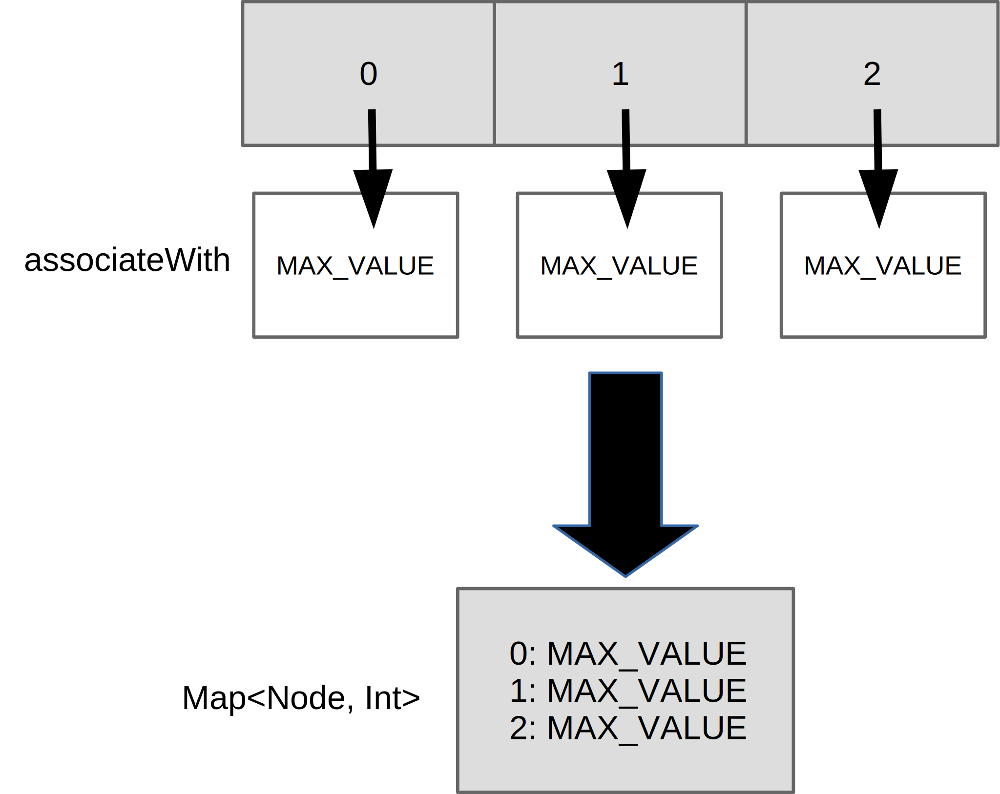
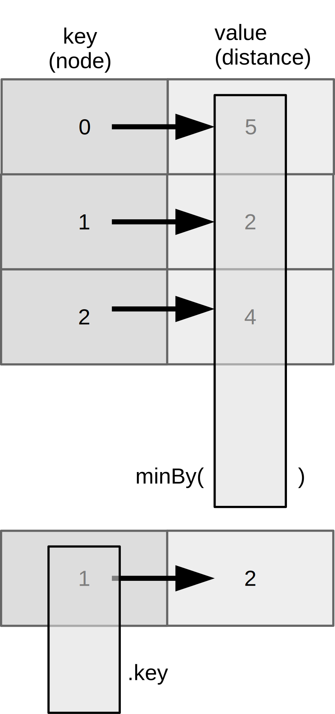

Dijkstrov algoritmus na hľadanie najkratšej cesty v neorientovanom grafe s nezápornými hranami je skvelá možnosť, ako si ukázať učebnicový grafový algoritmus… ale aj krásnu syntax Kotlinu.
Budeme potrebovať:
- Reprezentáciu grafu: 1ks
- Funkciu na výpočet najväčšej vzdialenosti
- A korenie
- Reprezentácia uzlov
- Prevody medzi uzlami a číslami.
Reprezentácia grafu
Graf s uzlami a hranami má milión reprezentácií. My si zvolíme tú najhlúpejšiu: maticu incidencií. Ak máme dva uzly, U a V, do tabuľky na U-ty riadok a V-ty stĺpec uvedieme vzdialenosť medzi nimi. To isté urobíme aj naopak: na V-ty riadok a U-ty stĺpec dáme tú istú vzdialenosť, pretože či ideme z Košíc do Prešova alebo naopak, vzdialenosť je rovnaká.
Urobíme ešte jedno zjednodušenie: uzly budú čísla! Takto môžeme reprezentovať maticu ako dvojrozmerné pole. Alebo také dačo. Uzly ako čísla budú predstavovať indexy „riadkov“ a „stĺpcov“ a hodnota v políčku bude vzdialenosť medzi nimi.
Matica incidencií v Kotline
Pole v Kotline je reprezentované triedou Array. Tá je skvelá: má dvojparametrový konštruktor, kde vieme uviesť rozmer poľa a dokonca ho aj nainicializovať ľubovoľným prvkom.
Jednoprvkové pole jednotiek dĺžky 8 môžeme spraviť takto:
val numbers = Array(8) { 1 }
Guľaté zátvorky reprezentujú druhý parameter konštruktora. To vznikne nasledovným skracovaním:
val numbers = Array(8, { index -> 1 })
// nepoužívaný index vynecháme
val numbers = Array(8, { 1 })
// ak je posledný argument lambda výraz, môžeme ho vysunúť za zátvorku
val numbers = Array(8) {1}
Dvojrozmerné polia
Dvojrozmerné polia v Kotline neexistujú. Dvojrozmerné pole je v skutočnosti bežné pole, ktorého prvky sú bežné polia.
Potrebujeme maticu, teda 2D pole veľkosti 8x8 plné núl?
val matrix = Array(8) { Array(8) { 0 } }
Vo vnútri zátvoriek inicializujeme prvky poľa ako polia, ktoré vnorene inicializujeme nulami. Toto je naša matica incidencií!
Graf s maticou incidencií
Polia sa nedajú nafukovať a sfukovať. Raz vytvorené pole má danú dĺžku a koniec. (Ak chceme dynamické polia, musíme použiť niečo iné, napríklad List.)
To nám nevadí, pretože sa budeme tváriť, že graf vytvoríme s nadrôtovanou veľkosťou.
Môžeme si urobiť kotlinovskú triedu v súbore StupidDijkstra.kt:
class StupidGraph(private val size: Int) {
private val matrix = Array(size) { Array(size) { 0 } }
}
V primárnom konštruktore povieme, že parametrom je veľkosť size, typu číslo Int. Keďže je to interná premenná, vyhlásime ju za private.
Vo vnútri pripravíme naše dvojrozmerné pole, pričom rozmery preberieme z konštruktorovej vlastnosti (property) size.
Graf si môžeme vytvoriť!
fun main() {
val graph = StupidGraph(8)
}
To je však asi tak všetko, čo s ním môžeme robiť.
Funkcie pre zábavu s grafmi
Pridávanie hrán
Na pridávanie hrán si vytvoríme metódu triedy StupidGraph. Zoberie tri parametre:
- zdrojový uzol
- cieľový uzol
- vzdialenosť.
Vzdialenosť nech je celé číslo Int. Ale čo s uzlami? Povedali sme si, že uzly budú čísla, pretože takto sa s nimi bude lepšie narábať pri práci s maticou.
Vlastné dátové typy typealias
Už teraz tušíme, že aj vzdialenosť, aj uzly sú celé čísla Int. Aby sa to nepoplietlo, môžeme v Kotline využiť aliasovanie typov. Aha:
typealias Node = Int
Práve sme povedali, že dátový typ Node bude v skutočnosti Int. Úlohou aliasov je sprehľadniť zápis.
Funkcia pre pridávanie hrán
Takto si môžeme pripraviť funkciu, teda metódu v triede StupidGraph:
class StupidGraph(private val size: Int) {
// ...
fun add(node1: Node, node2: Node, weight: Int) {
...
Vidíme krásne otypované parametre: uzly sú Node a váhy sú čísla!
Implementácia bude jednoduchá, prosto nastavíme obe hodnoty buniek, v jednom i druhom smere.
fun add(node1: Node, node2: Node, weight: Int) {
matrix[node1][node2] = weight
matrix[node2][node1] = weight
}
Vidíme dva aspekty:
- Napriek tomu, že uzol
node1inode2sú typuNode, vďaka typovým aliasom ich vieme považovať za čísla. - Vidíme prístup k dvojrozmernému poľu cez dve hranaté zátvorky.
Teraz si už môžeme pripraviť graf s dvoma uzlami:
val g = StupidGraph(2)
g.add(0, 1, 20)
Práve sme povedali, že z uzla 0 do uzla 1 je vzdialenosť 20 merných jednotiek, ale to platí aj naopak: z uzla 1 do uzla 0 je to rovnaké.
Zisťovanie vzdialeností
Teraz sa nám bude hodiť funkcia pre zisťovanie vzdialeností. Dodajme ju ako metódu do našej grafovej triedy:
fun getWeight(node1: Node, node2: Node) = matrix[node1][node2]
Táto funkcia berie dva parametre a vracia jedno celé číslo reprezentujúce vzdialenosť. Funkcia nemá telo, pretože reprezentuje jednoduchý výraz, ktorý zistí z matice z daného koordinátu hodnotu z príslušného políčka.
Môžeme si to overiť vo funkcii main():
println(g.getWeight(1, 0)) // výsledok je 20
Získanie uzlov
V kóde sa hodí získanie všetkých uzlov z grafu. To môžeme implemenovať:
- cez funkciu
getNodes() - alebo využiť properties a vytvoriť kotlinovskú vlastnosť, ktorá umožní bodkovú notáciu v duchu
g.nodes.
val nodes: Set<Node> = matrix.indices.toSet()
Deklarácia mapuje vlastnosť nodes na volanie inej vlastnosti indices na našom 2D poli matrix.
Keďže sme zvolili umnú implementáciu, dva uzly v grafe znamenajú maticu s dvoma riadkami a dvoma stĺpcami, a indexy týchto uzlov sú 0 a 1. Dostupnú uzly sú takto vtipne namapované na indexy poľa, čo vieme získať presne cez indices.
Na to, aby to fungovalo, potrebujeme ešte jeden prevod: indexy indices majú dátový typIntRange (rozsah integerov), ale to radšej prevedieme na množinu, s ktorou sa robí omnoho lepšie. Prevod z rozsahu integerov na množinu uzlov je jednoduchý, pretože aliasing typov zabezpečí, že Int sa tvári ako Node.

Ako vidno na obrázku, indices vrátia indexy z „vodorovného“ poľa.
Odstraňovanie uzlov
Pri Dijkstrovom algoritme budeme potrebovať aj odstraňovanie uzlov. Budeme to robiť hlúpym spôsobom, pretože nemáme možnosť odstraňovať položky z poľa. Namiesto toho zmazanému uzlu jednoducho nastavíme nulovú vzdialenosť do ostatných uzlov i naopak, do zmazaného uzla nastavíme 0 zo všetkých odchádzajúcich uzlov.

Prvý krok je na obrázku znázornený tmavosivým pozadím, a druhý krok nastaví svetlosivému políčku na indexe 0 vzdialenosť nula.
Kód vyjadríme krásnou funkciou:
fun remove(node: Node) {
matrix[node].fill(0)
matrix.forEach { it[node] = 0 }
}
Zisťovanie susedov
Budeme potrebovať funkciu pre zisťovanie susedov. To dosiahneme jednoducho:
- Získame „stĺpec“ z matice incidencií.
- Preiterujeme jeho prvky a vrátime tie indexy zodpovedajúce uzlom, ktorých vzdialenosti sú väčšie ako nula. Nulové indexy totiž znamenajú neexistujúcu hranu.
Na obrázku tak vidíme, že pre uzol 0 zistíme susedné uzly 1 a 2.

fun getAdjacentNodes(node: Node): List<Node> {
return matrix[node].mapIndexedNotNull { index, distance ->
if (distance > 0) index else null
}
}
Funkcia mapIndexedNotNull() prechádza poľom a zavolá lambda výraz s dvoma parametrami, v podobnom duchu, ako by to robil bežný cyklus for:
indexpredstavuje index prvku, čo je zhodou okolností názov uzladistanceznamená dĺžku hrany, teda vzdialenosť.
Každý prvok sa namapuje na iný prvok, ale tie prvky, ktoré sa mapujú na null, sa z výsledku vynechajú. V našom prípade mapujeme nulu na null, jednotku na 1, a dvojku na 2, čo po vynechaní vráti uzly/indexy 1 a 2.
Metóda dokonca vráti elegantný zoznam čísiel, ktoré transparentne prevedieme na zoznam uzlov Node.
Použitie grafu
Ak by sme chceli vytvoriť komplexný graf, napr. so vzdialenosťami medzi slovenskými krajskými mestami, došli by sme k niečomu takémuto:
val g = StupidGraph(8)
g.add(0, 1, 5)
g.add(1, 2, 5)
g.add(0, 2, 9)
g.add(1, 3, 8)
g.add(3, 4, 8)
g.add(4, 5, 9)
g.add(4, 6, 25)
g.add(2, 5, 13)
g.add(6, 7, 3)
g.add(5, 7, 25)
g.add(0, 5, 22)
Toto vyzerá dosť šialene a ľahko sa v tom dá stratiť. Kde sme spravili chybu? V tom, že naše uzly môžu byť len čísla. Ale to sa dá ľahko napraviť!
Pomocné triky na skrátenie (“DSL”)
Urobme si pomocnú triedu!
enum class City {
BRATISLAVA, TRNAVA, NITRA, TRENCIN, ZILINA, BANSKA_BYSTRICA, PRESOV, KOSICE
}
Tento enum má výhodu: elementy majú jednoznačné poradie, pretože taký Trenčín má index 3, čo vieme získať cez City.TRENCIN.ordinal.
Môžeme to prepísať!:
val g = StupidGraph(8)
g.add(City.BRATISLAVA.ordinal, City.TRNAVA.ordinal, 5)
...
To tiež nie je ktoviečo! Vieme to vylepšiť dvoma vecami:
- pomocnou funkciou, ktorá prevedie prvok na číslo uzla
- a importom, ktorý skráti zápis.
Na začiatok súboru môžeme dodať import všetkých položiek enum-u:
import com.github.novotnyr.graph.kt.stupid.City.*
Teraz už veselo môžeme písať:
g.add(BRATISLAVA.ordinal, TRNAVA.ordinal, 5)
Extension funkcia na krajšie pridávanie
Kotlin umožňuje používanie extension functions, akýchsi rozširujúcich funkcií, ktoré umožňujú pridávať nové metódy existujúcim triedam, na ktoré nemáme dosah alebo ktoré nechceme zaburiniť zbytočnými pomocnými metódami.
Ak chceme triede StupidGraph pridať pomocnú funkciu na pridávanie vzdialenosti, vieme to dosiahnuť nasledovným spôsobom:
fun StupidGraph.distance(source: City, destination: City, distance: Int) {
add(source.ordinal, destination.ordinal, distance)
}
Všimnime si:
- receiver, teda triedu objektu, ktorá vyfasuje novú metódu. V našom prípade ide o
StupidGraph. - názov funkcie uvedený za bodkou, teda
distance. - dva parametre: pre zdrojové a cieľové mesto, plus tretí parameter pre vzdialenosť
- Objekt, ktorý prijme novú metódu, je k dispozícii pod premennou
this. V našom prípade smethisvynechali a teda metóduadd()voláme priamo.
Zápis je teraz ešte krajší:
val g = StupidGraph(8)
g.distance(BRATISLAVA, TRNAVA, 5)
g.distance(TRNAVA, NITRA, 5)
//...
Konštrukcia with
Konštrukcia with , jedna zo scope functions, teda funkcií pre prácu s rozsahom platnosti, uľahčuje situácie, keď dokola voláme metódy na jednom objekte.
Napríklad na našej premennej g. Skúsme to prepísať:
with(StupidGraph(8)) {
distance(BRATISLAVA, TRNAVA, 5)
distance(TRNAVA, NITRA, 5)
distance(BRATISLAVA, NITRA, 9)
distance(TRNAVA, TRENCIN, 8)
distance(TRENCIN, ZILINA, 8)
distance(ZILINA, BANSKA_BYSTRICA, 9)
distance(ZILINA, PRESOV, 25)
distance(NITRA, BANSKA_BYSTRICA, 13)
distance(PRESOV, KOSICE, 3)
distance(BANSKA_BYSTRICA, KOSICE, 25)
distance(BRATISLAVA, BANSKA_BYSTRICA, 22)
}
Premenná g sa stratila, resp. transformovala na this dostupnú vo vnútri sekcie with.
To už vyzerá elegantne!
Implementácia Dijkstru
Na implementáciu Dijkstru použijeme inšpiráciu z Java kódu. Budeme potrebovať:
- jeden graf
- jedno mapovanie medzi uzlami a dosiaľ nájdenými vzdialenosťami
- jedno mapovanie medzi uzlami a ich predchodcami
- jednu funkciu na nájdenie najbližšieho uzla
- a jednu funkciu
Graf
Vyrobme si funkciu na výpočet podľa algoritmu. Funkciu urobme ako extension, aby sme nepleveli triedu grafu:
fun StupidGraph.findShortestPath(sourceNode: Node, destinationNode: Node): List<Node>
V iných jazykoch by sme vyrobili statickú funkciu, ktorá berie ako prvý parameter graf. V Kotline nič také nie je potrebné, keďže extension function bude fungovať presne tak, ako keby išlo o metódu triedy StupidGraph.
Mapovanie medzi uzlami a vzdialenosťami
Vytvorme si mapu medzi uzlami a vzdialenosťami. Ako základ využime zoznam uzlov grafu, ktorý pomocou metódy associateWith vieme namapovať na mapu, kde indexy uzlov budú kľúčom a konštantna Int.MAX_VALUE bude nekonečná vzdialenosť.
val distances = nodes
.associateWith { Int.MAX_VALUE }
.toMutableMap()
distances[sourceNode] = 0
Metóda associateWith prevádza zoznam na mapu. Zoberie lambdu, ktorá povie, aká hodnota sa má namapovať na kľúč reprezentovaný prvkom zoznamu.

Výsledok prevedieme na mutable (meniteľnú) mapu, a zdrojovému prvku nastavíme nulovú vzdialenosť, aby sme algoritmus začali.
Mapovanie medzi uzlami a ich predchodcami
To bude jednoduché:
val predecessors = mutableMapOf<Node, Node>()
Zabudovaná funkcia mutableMapOf() vytvára meniteľnú mapu. V našom prípade z uzlov do uzlov.
Hľadanie cesty
Hľadanie cesty pôjde v zdanlivo nekonečnom cykle, ktorý však rozhodne skončí. V každom kole totiž vyhodíme jeden uzol, ktorý sme už vybavili.
do {
val currentNode = distances.findNearestNode() ?: break
for (adjacentNode in getAdjacentNodes(currentNode)) {
val distance = distances.getOrDefault(currentNode, Int.MAX_VALUE)
val possiblyBetterDistance = if (distance == Int.MAX_VALUE) {
Int.MAX_VALUE
} else {
distance + getWeight(currentNode, adjacentNode)
}
if (possiblyBetterDistance < distances[adjacentNode]!!) {
distances[adjacentNode] = possiblyBetterDistance
predecessors[adjacentNode] = currentNode
}
}
distances -= currentNode
remove(currentNode)
} while (true)
- Najprv nájdeme najbližší uzol, čo je funkcia
findNearestNode(), ktorú nemáme, ale hneď ju dopracujeme. Všimnime si operátor?:, ktorý predstavuje overenie ne-null-ovosti. Ak by náhodou bol výsledok funkcienull, zavolá sabreak, ktorý ukončí cyklusdo/while. (Stane sa to na konci behu algoritmu). - Následne prechádzame všetkými susedmi najbližšieho uzla a skúsime zistiť aktuálny odhad vzdialenosti do konkrétneho suseda.
- Následne skúsime odhadnúť lepšiu vzdialenosť:
- Ak je predošlý odhad vzdialenosti nekonečno, tak pripočítaním vzdialenosti do suseda tomu nepomôžeme, vždy to bude len nekonečno.
- Inak vyrátame nový odhad vzdialenosti a poznačíme si ho, a to vrátane výpočtu predchodcu.
Všimnime si, ako používame if ako výraz. Kotlin nepodporuje ternárny operátor, ale to nevadí, pretože výsledok if sa dá priradiť do premennej.
Zároveň si všimnime, ako pristupujeme k prvom mapy cez hranaté zátvorky[…], ktoré sa mapujú na volanie metódy get(). Jedine pri porovnávaní vzdialeností sa môže kompilátoru zdať, že výsledok môže vracať null, čo mu vysvetlíme cez dva výkričníky reprezentujúce non-null assertion, teda oznam, že toto null nikdy nebude.
Na záver algoritmu vyhodíme zo zoznamu vzdialeností aktuálny uzol, na čo použijeme operátor -= mapovaný na metódu remove() na mape. Okrem toho vyhodíme spracovaný uzol aj zo samotného grafu, na čo využijeme jeho metódu remove(). (Keďže ide o extension function, metóda remove() sa volá na receiveri funkcie, teda na objekte typu StupidGraph.)
Hľadanie najbližšieho uzla
Ak máme mapu medzi uzlami a vzdialenosťami, ako nájdeme uzol s najmenšou vzdialenosťou?
Pripravíme si ďalšiu extension funkciu:
private fun Map<Node, Int>.findNearestNode(): Node? {
return minBy { it.value }?.key
}
Funkcia v tomto prípade vracia typ Node?, teda buď uzol alebo null a receiverom je mapa medzi uzlami a vzdialenosťami.
Na mape môžeme zavolať funkciu minBy(), ktorá namapuje každú dvojicu kľúč-hodnota na nejaké číslo a z tohto nájde najmenší prvok.

Táto dvojica je reprezentovaná objektom Entry, s vlastnosťami key (kľúč) a value (hodnota). Z objektu, reprezentovaného v lambde implicitnou premennou it, vytiahneme hodnotu a z nej sa nájde najmenší objekt Entry.
Na záver z objektu vytiahneme kľúč (teda uzol). Keďže funkcia minBy() môže vracať null (ak sa náhodou mapa stane prázdnou), použijeme operátor bezpečnej navigácie ?., ktorý pre null hodnoty zabráni navigácii do vlastnosti key a tým nás ochráni pred NullPointerException.
Budovanie cesty
Posledný krok bude budovanie cesty. Algoritmus nám vybuduje mapu medzi uzlami a ich predchodcami. Cestu ako zozna vybudujeme nasledovne:
private fun buildPath(destinationNode: Node, predecessors: Map<Node, Node>): List<Node> {
val path = mutableListOf(destinationNode)
var predecessor = predecessors[destinationNode]
while (predecessor != null) {
path += predecessor
predecessor = predecessors[predecessor]
}
return path.reversed()
}
Začneme vytvorením meniteľného zoznamu cez funkciu mutableListOf(). Následne veselo prejdeme mapu s využitím operátora […] a každého predchodcu pridáme do zoznamu pomocou operátora +=, ktorá je mapovaný na metódu add() v zozname List.
A veľké finále: zoznam bude usporiadaný od konca do predu, ale vďaka funkcii reversed() si ho môžeme otočiť!
Megazhrnutie: kompletný program
Ak si to dáme dohromady, máme nasledovný program v súbore StupidDijkstra.kt
package com.github.novotnyr.graph.kt.stupid
import com.github.novotnyr.graph.kt.stupid.City.*
typealias Node = Int
class StupidGraph(private val size: Int) {
private val matrix = Array(size) { Array(size) { 0 } }
fun add(node1: Node, node2: Node, weight: Int) {
matrix[node1][node2] = weight
matrix[node2][node1] = weight
}
fun remove(node: Node) {
matrix[node].fill(0)
matrix.forEach { it[node] = 0 }
}
val nodes: Set<Node> = matrix.indices.toSet()
fun getAdjacentNodes(node: Node): List<Node> {
return matrix[node].mapIndexedNotNull { index, distance ->
if (distance > 0) index else null
}
}
fun getWeight(node1: Node, node2: Node) = matrix[node1][node2]
}
fun StupidGraph.findShortestPath(sourceNode: Node, destinationNode: Node): List<Node> {
val distances = nodes
.associateWith { Int.MAX_VALUE }
.toMutableMap()
distances[sourceNode] = 0
val predecessors = mutableMapOf<Node, Node>()
do {
val currentNode = distances.findNearestNode() ?: break
for (adjacentNode in getAdjacentNodes(currentNode)) {
val distance = distances.getOrDefault(currentNode, Int.MAX_VALUE)
val possiblyBetterDistance = if (distance == Int.MAX_VALUE) {
Int.MAX_VALUE
} else {
distance + getWeight(currentNode, adjacentNode)
}
if (possiblyBetterDistance < distances[adjacentNode]!!) {
distances[adjacentNode] = possiblyBetterDistance
predecessors[adjacentNode] = currentNode
}
}
distances -= currentNode
remove(currentNode)
} while (true)
return buildPath(destinationNode, predecessors)
}
private fun Map<Node, Int>.findNearestNode(): Node? {
return minBy { it.value }?.key
}
private fun buildPath(destinationNode: Node, predecessors: Map<Node, Node>): List<Node> {
val path = mutableListOf(destinationNode)
var predecessor = predecessors[destinationNode]
while (predecessor != null) {
path += predecessor
predecessor = predecessors[predecessor]
}
return path.reversed()
}
enum class City {
BRATISLAVA, TRNAVA, NITRA, TRENCIN, ZILINA, BANSKA_BYSTRICA, PRESOV, KOSICE
}
fun StupidGraph.distance(source: City, destination: City, distance: Int) {
add(source.ordinal, destination.ordinal, distance)
}
fun main() {
with(StupidGraph(8)) {
distance(BRATISLAVA, TRNAVA, 5)
distance(TRNAVA, NITRA, 5)
distance(BRATISLAVA, NITRA, 9)
distance(TRNAVA, TRENCIN, 8)
distance(TRENCIN, ZILINA, 8)
distance(ZILINA, BANSKA_BYSTRICA, 9)
distance(ZILINA, PRESOV, 25)
distance(NITRA, BANSKA_BYSTRICA, 13)
distance(PRESOV, KOSICE, 3)
distance(BANSKA_BYSTRICA, KOSICE, 25)
distance(BRATISLAVA, BANSKA_BYSTRICA, 22)
val shortestPath = findShortestPath(BRATISLAVA.ordinal, KOSICE.ordinal)
shortestPath.forEach {
println(City.values()[it])
}
}
}